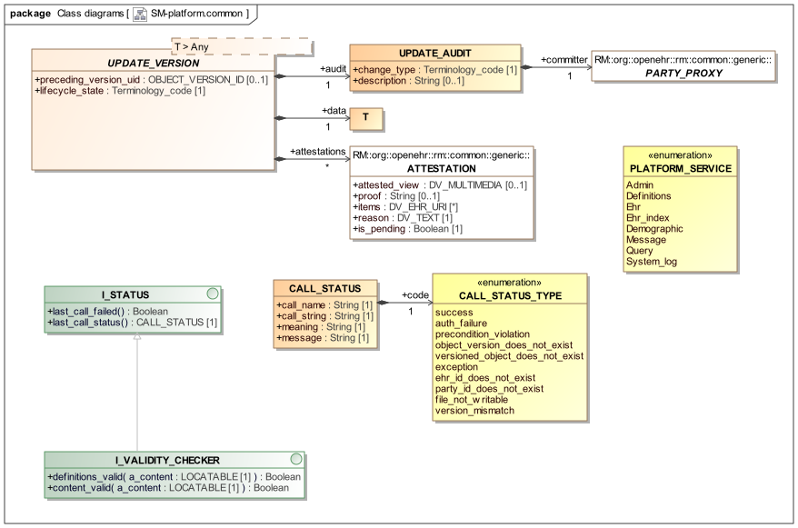

Common Package
Overview
The platform.common package shown below defines common elements of the platform service model, including:
-
I_STATUS/CALL_STATUS: a representation of the status result of any call execution; -
UPDATE_VERSION: an information structure suitable for committing data to a versioned store based on the openEHR versioning (change control) specification; -
PLATFORM_SERVICE: an enumeration of the available services, used in various interfaces.

sm.platform.common packageRepresenting Call Status
The status of a call is represented using a CALL_STATUS object containing various informational fields and a code attribute that carries a value from the enumerated type CALL_STATUS_TYPE or a descendant. The codes defined in CALL_STATUS_TYPE are generic and apply across all services. Particular services may add more codes by inheriting from this class and defining further specific codes.
Version Update Semantics
Some of the interfaces defined in this specification cause creation or update of a versioned 'top-level' openEHR object, i.e. a COMPOSITION, PARTY or similar. Such calls implicitly require the creation of a new CONTRIBUTION on the server side, as well as one or more new ORIGINAL_VERSION objects, and in creation cases, new VERSIONED_OBJECTS.
To perform this work on the server, the UPDATE_VERSION<T> structure is provided in order to enable the appropriate meta-data to be supplied by the caller, leaving out parts that are generated by the service. Thus, a partial version of AUDIT_DETAILS called UPDATE_AUDIT is used, since the time_committed and system_id attributes need to be generated on the server. ATTESTATION instances can be supplied in their full form.
The preceding_version_uid attribute must be specified, except in the case where the version update is a first version. The lifecycle_state must be supplied in all cases, which is a value such as 532|complete|, 553|incomplete|, 523|deleted|, etc from the openEHR terminology.
This approach allows the server side to create the required new ORIGINAL_VERSION<T> object, rather than the client trying to do it.
For each storable top-level type such as COMPOSITION, FOLDER, PARTY descendants etc, a new concrete type may be derived from UPDATE_VERSION<T>. For example, for COMPOSITION, the type UV_COMPOSITION may be defined, inheriting from UPDATE_VERSION<COMPOSITION>.
Class Definitions
Unresolved include directive in modules/openehr_platform/pages/common_package.adoc - include::ROOT:partial$classes/i_status.adoc[]
Unresolved include directive in modules/openehr_platform/pages/common_package.adoc - include::ROOT:partial$classes/call_status.adoc[]
Unresolved include directive in modules/openehr_platform/pages/common_package.adoc - include::ROOT:partial$classes/call_status_type.adoc[]
Unresolved include directive in modules/openehr_platform/pages/common_package.adoc - include::ROOT:partial$classes/update_version.adoc[]
Unresolved include directive in modules/openehr_platform/pages/common_package.adoc - include::ROOT:partial$classes/update_audit.adoc[]
Unresolved include directive in modules/openehr_platform/pages/common_package.adoc - include::ROOT:partial$classes/i_validity_checker.adoc[]